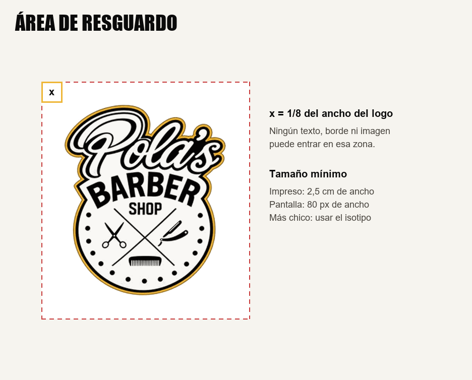
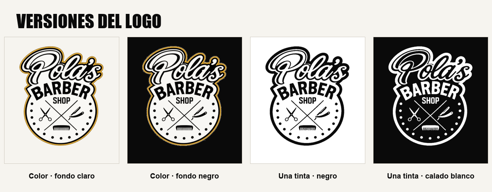
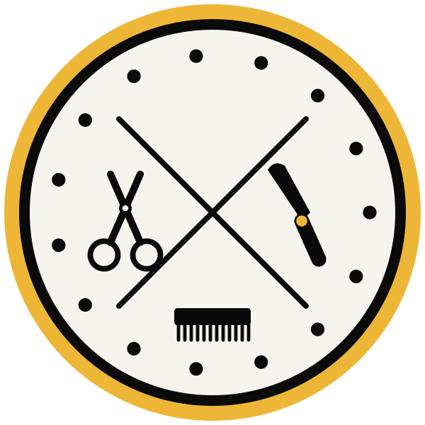
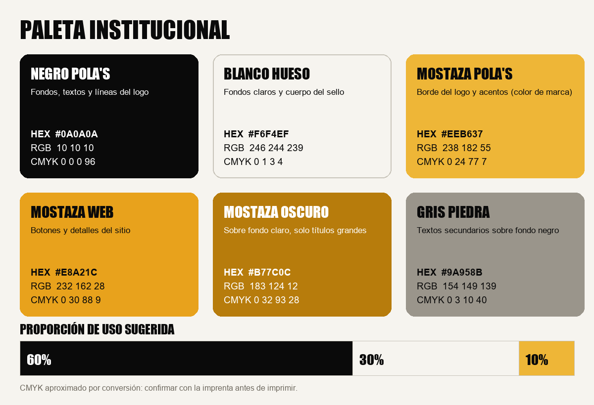
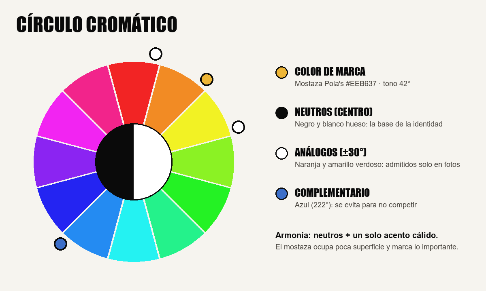
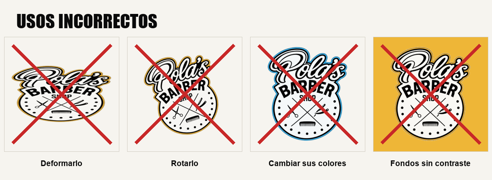
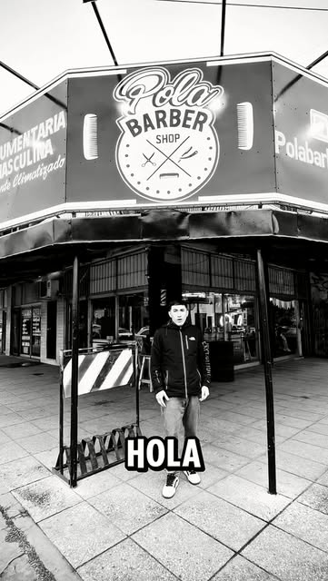
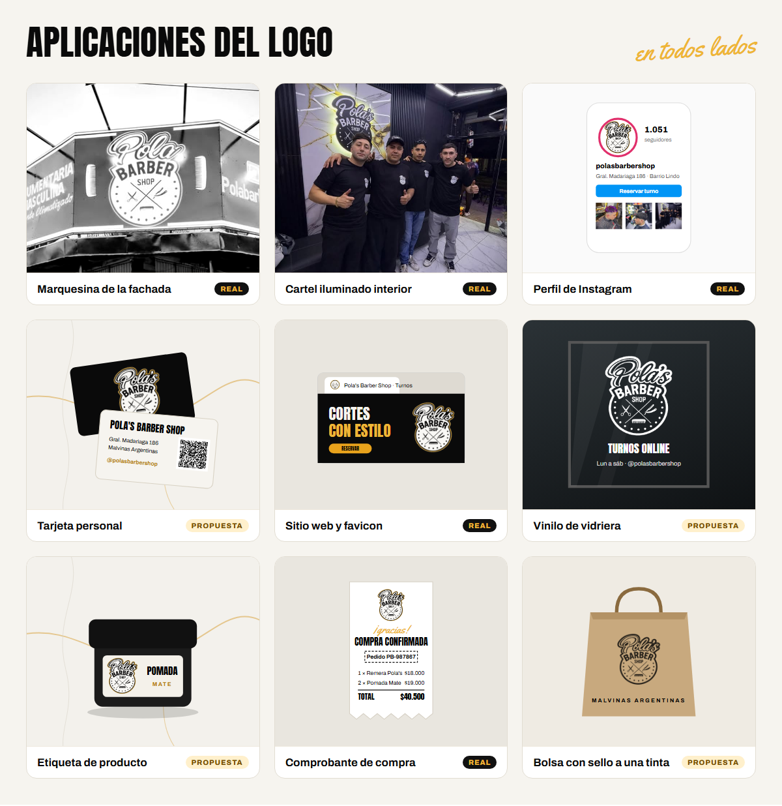

Pola's Barber Shop es una barbería de barrio con casi diez años de trayectoria, que en 2026 se mudó a un local nuevo en Gral. Madariaga 186, Barrio Lindo, Malvinas Argentinas. Su identidad combina la barbería clásica (sello circular, navaja, tijera, peine, letra manuscrita) con la cultura urbana del barrio (fades, color, ropa propia).
Directo, cálido y barrial. Tuteo y voseo rioplatense. Frases cortas y con energía.
| Así sí | Así no |
|---|---|
| "Reservá tu turno en menos de un minuto." | "Solicite su turno mediante el formulario." |
| "¡Gracias por bancarnos siempre!" | "Agradecemos su preferencia." |
| "¿No podés venir? Cancelalo y le dejás el lugar a otro." | "Las cancelaciones deben realizarse con antelación." |
Valores y tono relevados de las publicaciones de la cuenta @polasbarbershop.
El logo es un isologotipo: el nombre y el símbolo forman una sola pieza y no se separan. Tiene tres partes:

Se usa siempre a partir del archivo original, sin redibujarlo. Hoy solo existe como imagen de mapa de bits tomada de Instagram: se recomienda vectorizarlo para impresiones grandes (marquesina, vinilos, bordados).


El sello circular del logo, sin el texto. Se usa cuando el logo completo quedaría ilegible: favicon, foto de perfil chica, stickers, sellos de fidelidad. Nunca reemplaza al logo en la fachada ni en la papelería.


El negro y el blanco hueso son la base; el mostaza es el único acento y se usa en poca superficie. El mostaza del logo (#EEB637) se mide del archivo original; en la web se usa uno algo más oscuro (#E8A21C) para que los botones contrasten mejor.
palabra manuscrita + TÍTULO EN ANTON + texto en Archivo. Es la misma composición del logo: manuscrita arriba, imprenta gruesa abajo.
Las tres familias son de Google Fonts, con licencia libre (SIL Open Font License).

Tampoco: agregarle sombras o brillos, encerrarlo en otras formas, ni ponerlo sobre fotos con mucho detalle sin una versión de una tinta.

Mármol con vetas doradas y listones negros, tomados de las paredes del local. Fotos del barrio y del local en blanco y negro; los cortes terminados, a color.

Las piezas marcadas como "propuesta" son diseños para producir; las "reales" ya existen en el local o en sus redes.